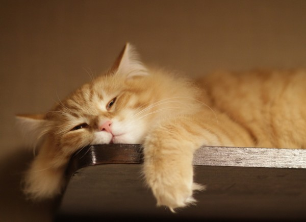

Cats for the most part are very affectionate animals. What often makes them unsocial is poor treatment by an owner, a shelter, or even a previous owner. Cats do not respond to physical punishment the way dogs
do, theynever attach the punishment to their previous actions. This means they just think the owner is going nuts on
them for no reason. Eventually they can distrust all humans because of this.
It is time to sponsor a kitten and be a part of happiness and be a pround parents